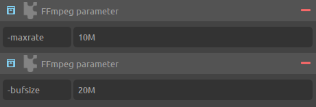

Transcoding to MP4 / h.264 AVC / h.265 HEVC¶
Transcoding to mp4 using h.264 or h.265 has been made very easy and efficient with DuME, and most of the time you should not need to use advanced parameters. But in some cases, you may want to adjust these settings. These are some advices to have the best quality with the smallest possible files, and fix compatibility issues with specific players.
You can read more details in the FFmpeg wiki.
 Quality settings¶
Quality settings¶

Most of the time, you should not need to set the bit rate by yourself. It is easier and better to use the quality slider to set a target quality, unless for technical reasons you need a specific average bitrate or a constant bit rate.
The quality slider is the most important parameter, which will adjust the quality vs the output file size. Setting the slider to more than 50% should output a good quality video, but if you need a perfect encoding, you can go higher than 75%.
Setting the quality to 100% will be lossless, but be careful as this is not standard with h.264 and the file may not be played correctly with the majority of players.
Check the Lossless option for lossless compression.
Warning
Lossless compression with h.264 is not standard, and won’t play with most players.
The speed setting will provide a certain encoding speed to compression ratio. A slower encoding will provide better compression (compression is quality per filesize). This means that, for example, if you target a certain bit rate, you will achieve better quality with a slower preset. Similarly, when using the quality setting, you will simply save bit rate by choosing a slower encoding.
Just use the slowest setting that you have patience for.
You can optionally use the fine tuning to adjust the encoding settings based upon the specifics of your input. Current tunings include:
- Film – use for high quality movie content; lowers deblocking
- Animation – good for cartoons; uses higher deblocking and more reference frames
- Grain – preserves the grain structure in old, grainy film material
- Slide show – good for slideshow-like content
- Fast Decode – allows faster decoding by disabling certain filters
- Streaming (low latency) – good for fast encoding and low-latency streaming
Note
Some of these tunings are not available for h.265 HEVC, but don’t worry: you just don’t need them as h.265 is so much better than h.264.
For example, if your input is animation then use the animation tuning, or if you want to preserve grain in a film then use the grain tuning. If you are unsure of what to use or your input does not match any of tunings then omit the Fine tune option.
The Intra-Frame option can be used to improve decoding performance with non-linear editing software such as Adobe Premiere, Avid Media Composer, DaVinci Resolve, or even Adobe After Effects, but may result in a bigger file. This option also enables frame-by-frame playback with most players.
Compatibility¶
To fix compatibiliy issues with some players, you may need to change the profile and level. Please refer to the documentation of the players you need to be compatible with.
h.264 / AVC¶

These are the three profiles you can select in DuME:
- Baseline: Primarily for lower-cost applications with limited computing resources, this profile is used widely in videoconferencing and mobile applications.
- Main: Originally intended as the mainstream consumer profile for broadcast and storage applications, the importance of this profile faded when the High profile was developed for those applications.
- High: The primary profile for broadcast and disc storage applications, particularly for high-definition television applications (this is the profile adopted into HD DVD and Blu-ray Disc, for example).
There actually exist three other profiles derived from the High format for the h.264 encoder: High 10, High 4:2:2 and High 4:4:4, and DuME will select the right one automatically according the desired pixel format you may have set, if you’re using the High format.
You can also select the level, depending on your needs. If you don’t know what this means, leave the selection to “Auto” and let DuME choose the righ level according to your resolution and pixel format.
h.265 / HEVC¶
There are codec profiles for h.265 / HEVC, but they can be automatically be chosen according to the pixel format you’ve set in DuME. If you actually need to set a specific profile, add a custom FFmpeg parameter with -profile:v as parameter and one of these values:
8bit profiles¶
- main, main-intra, mainstillpicture
- main444-8, main444-intra, main444-stillpicture
10bit profiles¶
- main10, main10-intra
- main422-10, main422-10-intra
- main444-10, main444-10-intra
12bit profiles¶
- main12, main12-intra
- main422-12, main422-12-intra
- main444-12, main444-12-intra

There also exists a level for h.265, but you should never have to set it as the encoder will detect the right one for you.
 Constrained encoding (VBV / maximum bit rate)¶
Constrained encoding (VBV / maximum bit rate)¶

Use this mode if you want to constrain the maximum bitrate used, or keep the stream’s bitrate within certain bounds. This is particularly useful for online streaming, where the client expects a certain average bitrate, but you still want the encoder to adjust the bitrate per-frame.
Add two custom parameters:
-maxratesets the maximum bitrate. AddMto the value to specify it in Mbps.-bufsizeis the “rate control buffer”, so it will enforce your requested “average” bitrate across each 20 MBit (it this example) worth of video. Here it is assumed that the receiver / player will buffer that much data, meaning that a fluctuation within that range is acceptable.
FAQ¶
Does DuME support multi-pass encoding?¶
No. Read the next question for more details.
Would two-pass provide a better quality?¶
No, although it does allow you to target a file size more accurately. Nowadays, most users don’t need this, but if you need it for technical reasons, just get in touch and it may be implemented.
Why doesn’t my lossless output look lossless?¶
When setting the quality to 100%, the output should be lossless. But if your input files are RGB, it’s the RGB to YUV color space conversion. You may output RGB h264 but be careful as this is not standard at all.